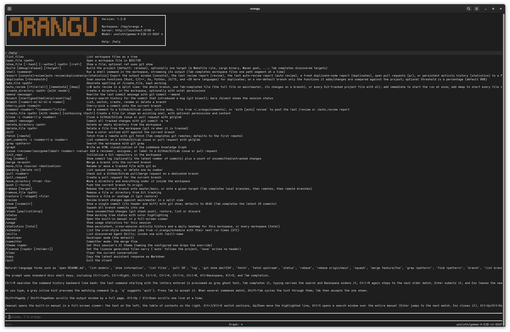
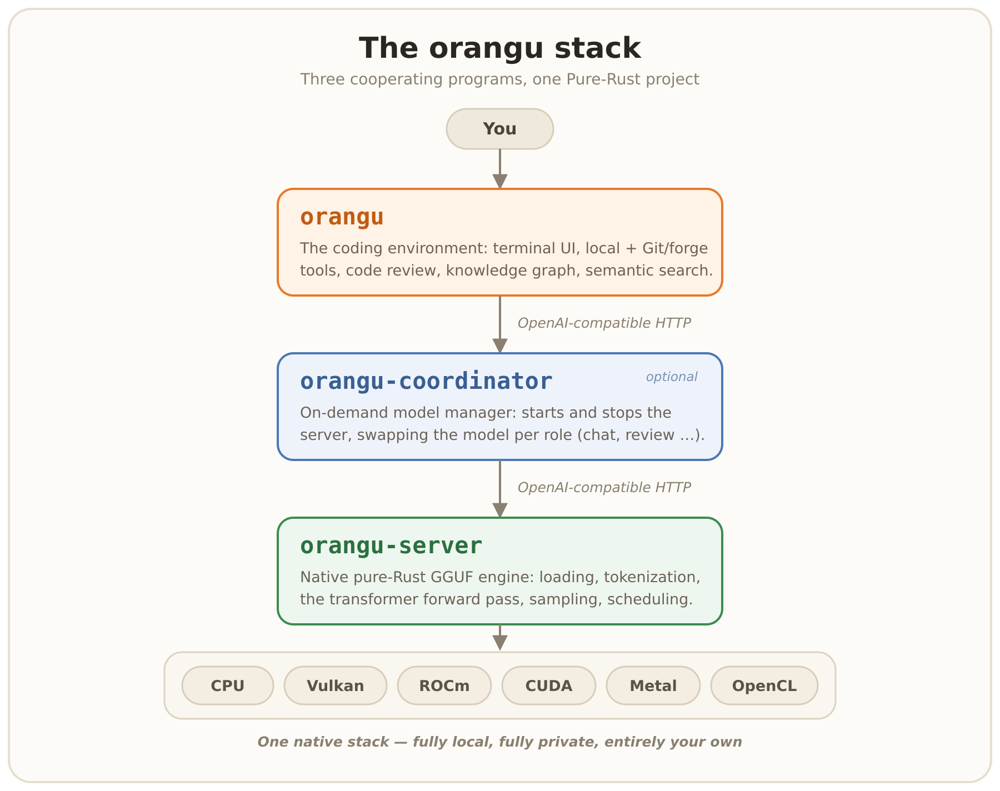

Introduction
[orangu][orangu] is a local, workspace-aware, tool-driven coding environment.
More than a client, orangu is a complete, self-contained AI
coding stack — three cooperating programs written end to end in
Rust: the coding environment (orangu), an on-demand model
manager (orangu-coordinator, see the Coordinator
chapter), and a native, pure-Rust GGUF inference server
(orangu-server, see the Inference server chapter)
that implements the transformer forward pass itself, with no dependency
on any C or C++ inference library and no Python. Every layer speaks the
OpenAI-compatible API. See A complete stack below.
orangu is named after the Orangutan - the smartest ape.

Features
- A complete Rust stack — the
orangueditor, theorangu-coordinatormodel manager, and the nativeorangu-serverGGUF inference engine, with no C/C++ inference library and no Python dependency - OpenAI-compatible chat completions served by the built-in
orangu-server— fully local, no Internet connection required after setup - Interactive code review (
/review) and LLM-driven auto review (/auto_review) of the changes on your branch, with a category-grouped report you can export or post to an issue - Workspace-scoped file tools — show, create, modify, move, and delete files and directories, staged through Git as the change is made
- Workspace-aware Git and forge tools (commit, rebase, push, pull requests, issues, comments) for the whole change-and-review loop
- Several projects open at once as workspace tabs, each with its own session, scrollback, and history
- Knowledge graph of the codebase (
/graph), semantic search by meaning (/search), and duplicate-code detection across more than 20 languages (/duplicates) - Context compression — AST-aware downsampling, a diff engine, secret redaction, and transcript compaction to protect the context window
- Agent Skills (
SKILL.md) and workspace memory (AGENTS.md) merged into the model’s context - Project builds with toolchain detection (
/build) — Cargo, CMake, Autotools, Meson, make, Maven, Python, and Go - URL fetching for external knowledge
- Shell command execution inside the workspace, streamed live
(
/shell) - Model switching, runtime server target control, and a server
capability report (
/information) - Persistent, resumable sessions (
/session,-r,-l) and per-workspace activity statistics (/statistics) - One-shot, scriptable runs (
-p,-q) and a cron-style scheduler for unattended commands (/schedule) - PDF export of the console, a review report, a pull-request summary,
the statistics, or a duplicate-code report (
/export) - Generated code carries the project’s own licence, detected from it
and chosen per session (
/license) - Themeable terminal interface (
/theme,-t), persistent history, shell-style editing, Tab completion, and a status banner - Built-in offline manual (
/manual) with full-text search
A complete stack
Most local-AI setups are a patchwork: one tool for the editor, a separate engine for inference, and glue to manage which model is loaded. orangu is the whole stack in one project — three cooperating programs, each speaking the OpenAI-compatible API to the next:

orangu— the workspace-aware coding environment you drive (this manual’s main subject): the terminal UI, local and Git/forge tools,/reviewand/auto_review, the knowledge graph, semantic/search, and the context-compression engine.orangu-coordinator— an optional companion HTTP proxy that starts and stopsorangu-serveron demand and swaps to whichever model each request needs, so a single-GPU machine can use a different model per role without ever running more than one server at once. See the Coordinator chapter.orangu-server— is the inference engine: GGUF loading, tokenization, the transformer forward pass, sampling, and request scheduling implemented directly in Rust with no dependency on any C or C++ inference library, running on CPU or GPU (Vulkan, Metal, CUDA, ROCm, OpenCL). Besides the OpenAI-compatible and native endpoints it offers a workspace-scoped file API and an optional browser chat console, and it serves as the machine’s GGUF inventory — listing, downloading, and deleting models, and reporting the hardware they have to run on. See the Inference server chapter.
A fourth binary, orangu-bench, is a developer tool
rather than part of the stack: it measures decode and prefill throughput
of any OpenAI-compatible server over HTTP and charts it over time. See
the Benchmarking chapter.
Because every layer talks to the next over the OpenAI-compatible API, the pieces stay cleanly separated, yet they ship and run as one. The result is a fully local, fully private, single-language AI coding stack — no Python, no C/C++ engine, no cloud.
Community
Contributions to [orangu][orangu] are managed on [GitHub][orangu]
- [Ask a question][ask]
- [Raise an issue][issue]
- [Feature request][request]
- [Code submission][submission]
Contributions are most welcome!
Please, consult our [Code of Conduct][conduct] policies for interacting in our community.
Consider giving the project a [star][star] on [GitHub][orangu] if you find it useful. And, feel free to follow the project on [X][twitter] as well.